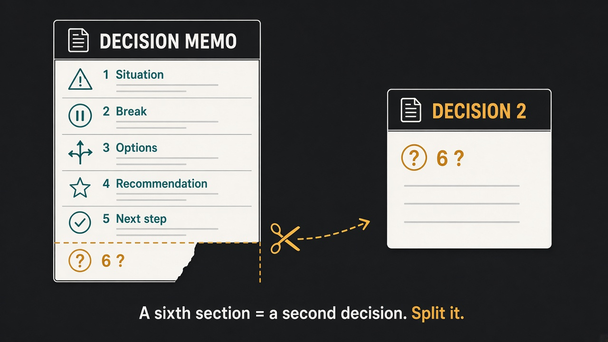

A decision memo has five parts; a sixth part is a second decision hiding inside the first
Source: Daniel Voss (@Architectus_L)
original post
What it claims
A decision memo has five parts: Situation, Break, Options, Recommendation, Next step. If a sixth part appears, it is usually a second decision hiding in the first. Split it into its own memo. Do not lengthen the document.
Why it matters for a PO
Stakeholder decisions stall when one memo quietly asks for two things, for example "approve the scope change" and "also move the release date." Readers argue the part they care about, the other half gets waved through or lost, and nobody can say afterwards what was actually decided. A fixed five-part shape (what is true now, what broke or changed that forces a choice, the real options, your pick, and the very next step) makes the ask obvious and keeps the memo to one page. The sixth-section test is a cheap self-check before you hit send: if you need more room, you are probably bundling.
3 takeaways
- Use the same five headings every time: Situation, Break (what changed that forces a choice now), Options, Recommendation, Next step.
- When you feel the need for a sixth section, look for a second decision and give it its own memo, owner, and next step.
- One memo, one decision. Length is a smell, not a sign of rigor.
Practice this week
Take the next decision you need from a stakeholder or the Product Owner forum and write it in the five headings, one short paragraph each. If anything doesn't fit, ask whether it is a separate decision. If it is, split it into a second memo and send them as two clear asks.